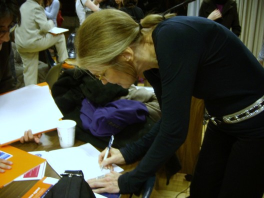

|
|
|
Browsing
Contact Us |
Campaigners |
Face to Face |
Tribune |
Interview |
News |
On the Web |
One Million |
Report
Farsi | Français | German | Italian | Spanish | العربية Also in this section
|

Praised Globally, Detained LocallyBy: Elahe Amani Tuesday 31 March 2009 Change for Equality: On the brink of the Persian New Year, the first day of Spring, Iranian women activists heard some encouraging news. The illustrious honoree at the Feminist Majority Foundation’s Fifth Annual Eleanor Roosevelt Award for Global Women’s Rights is the Campaign for One Million Signature Demanding Changes to Discriminatory Laws in Iran. The Change for Equality Website reported that the One Million Signatures Campaign also known as the Campaign for Equality is the recipient of the award "in special recognition of their innovating work to demand an end to discriminatory laws against women in Iran." On March 26th, only a few days later, 12 women’s rights activists were detained in Tehran, 10 of them are members of this Campaign. Four of those detained are young men. Visiting family and friends on the occasion of Nowruz is a tradition in Iran. Progressive people in Iran have always made sure to visit the families of political prisoners to express their solidarity and support. The twelve activists were planning to visit the family of Zahra Bani Yagoub, Mansour Osanloo and Nariman Mostafavi. Zahra Bani Yagoub, was the young, distinguished female medical doctor, who was arrested in 2007 by the Morality Police and later died in Hamedan prison. Authorities in Hamedan have claimed that she committed suicide but her family and lawyers have not accepted this claim and have pushed for further and impartial investigations. Zahra Bani Yaghoub’s family has been represented by Nobel Laureate Shirin Ebadi. Mansour Osanloo is a trade union leader in Iran who is serving a five-year prison sentence in Evin prison. He is a founding member of the Syndicate of Workers of Tehran and Suburbs Bus Company, an independent union that has been campaigning vigorously for workers’ rights. Nariman Mostafavi, a student activist at Amir Kabir University, was detained on 24 February by security agents at his home. He is reportedly held in Evin prison and is under interrogations. Despite the fact that visiting the families of prisoners is not an unlawful act, but those arrested have been charged. According to the site of Change for Equality, the site of the Campaign, the 12 women’s rights activists “ are facing two charges, including: disruption of public opinion and disruption of public order. Additionally a bail order for a third party guarantee by a government employee has been issued for these women’s rights activists in the amount of 50 million Tomans (roughly $50,000). It should be noted that while a third party guarantee bail amount is a lighter bail amount than bail orders which require the posting of a bail amount, stipulating that the guarantee must be provided by a government employee makes it difficult to post bail and as such the detention of these activists may be extended unnecessarily.” The arrest of these twelve women’s rights activists are not an isolated case. According to Amnesty International “at least two other women associated with the Campaign for Equality are also in custody: Ronak Safarzadeh has been held since October 2007, and Zeynab Beyezidi is serving a four-year prison sentence. The Campaign for Equality is also calling for the release of Alieh Aghdam-Doust, who is serving a three-year sentence imposed for her participation in a peaceful demonstration against legalized discrimination against women, which was held in June 2006, before the Campaign for Equality was launched. Amnesty International considers all to be prisoners of conscience.” The global women’s movement has supported the plight of Iranian women in demanding their human rights and human dignity. Likewise Iranian women’s rights activists and the members of the One Million Signatures Campaign have appreciated being recognized and honored in the past. In January 2009, the One Million Signatures Campaign received the Simone de Beauvoir Award, established in honor and memory of this Feminist theorist and writer. Every year on the 9th of January, the birthday of Simone de Beauvoir an Award has been given to persons or groups which work to promote women’s rights. The first Simone de Beauvoir Award, in commemoration of her centennial, was given to Taslima Nasreen the writer and women’s rights defender from Bangladesh and to Ayaan Hirsi Ali, a former member of the Parliament of the Netherlands. The Feminist Majortiy Foundation, founded by prominent women’s rights activist Eleanor Smeal is one of the major national women’s organizations in the US. Members of the Feminist Majority Foundation have supported the plight of Iranian women activist in the past. In 2007, when 33 women’s rights activists were arrested in front of Tehran’s Revolutionary Court in Iran, the Feminist Majority Foundation posted a petition on-line demanding the release of these activists. .
 The Foundation is currently the publisher of Ms. Magazine. Ms. is an American feminist magazine co-founded by American feminist and activist Gloria Steinem which first appeared in 1971 as an insert in New York magazine. In a panel organized by Women Intercultural Network at the 52nd session of the UN Commission on the Status of Women on the occasion of the 5th International Women’s Conference, Gloria Steinem signed an international petition in support of the One Million Signatures Campaign. The 2009 Global Women’s Right Award is the second time this Feminist Women’s Foundation has brought cheers and smiles to the hearts and faces of women’s rights activists in Iran. In 2006 this award, inspired by Eleanor Roosevelt’s human rights and peace work, was presented to four of the seven living women Nobel Peace Prize winners for their work for women’s rights: Nobel Prize Laureates Shirin Ebadi (2003) of Iran, Jody Williams (1997) of the United States, Betty Williams (1997) of Northern Ireland, and Rigoberta Menchu Tum (1992) of Guatemala. The award intended to highlight the recognition of women Nobel Peace Laureate as only 33 of of the 758 Nobel Prize winners, have been women, and only 12 of them have been awarded the Peace Prize. It is said that it is important to strive for something worth being recognized. The One Million Signatures Campaign which was launched in 2006, is reaching people in a way that is new and creative. The network’s innovative “ face to face “ approach used to provide legal education to Iranian women about their rights in the privacy of their homes or public places is a refreshing approach, their utilization of new and emerging technology is hopeful and the participation of young men in working to change discriminatory laws in Iran is unprecedented. The principles of inclusiveness, independence, relying on the people on the ground, collaboration with other groups, networks and organization within the women’s movement and broader social movements should not be compromised despite the challenges it might face. The strength of the Campaign emerges from these principles. The women activists are bearing the brunt of oppression and through their resistance they have shaped one of the most inspiring social movements in Iran. Their human rights are being violated, their dignity denied, their assembly in public is not permitted, their gathering at their own homes is often disrupted, their passports are confiscated and travel bans are imposed on them in an effort to prevent them from attending international conferences where they can network with other women’s rights activists globally.. They are being harassed on the streets by Morality Police, their presence on the ground for peaceful assembly framed is thwarted under the guise of threats to “ National Security” and their presence in cyberspace is filtered. Indeed the Campaign’s website, Change for Equality, has been filtered more than 19 times. The websites of other NGOs particularly gender focused women NGOs and on-line publications such as Feminist School are also not safe and have been filtered many times. According to a report published on March 21, 2009 by Global Voices Advocacy for Free Speech on-line “Iranian officials in 2006 reported that 10 million websites and blogs had been filtered and 90 percent of them contained “immoral” content. A few months ago, another report said 5 million websites and blogs had been blocked. A judiciary official also said at the end of last year, that an additional $5 million (US) will be invested in a new ‘filtering system”. Despite these pressures the grassroots struggle of Iranian women continues. They are the unsung heroes who only rely on their social and human capital and the support of other social movements. In so doing, they bring honor and appreciation for all Iranians in Iran and the Diaspora. |